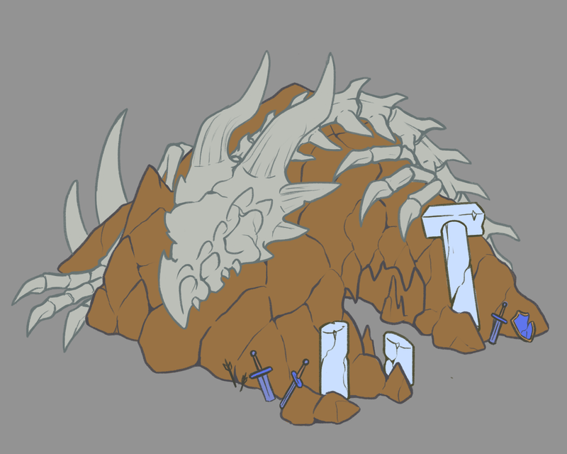
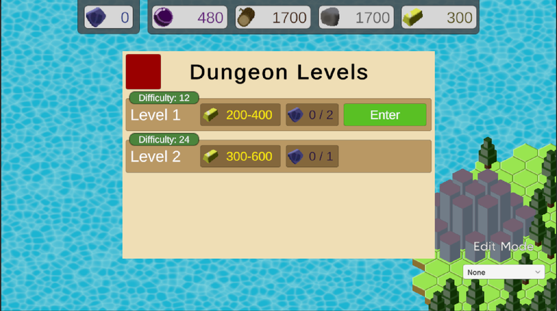
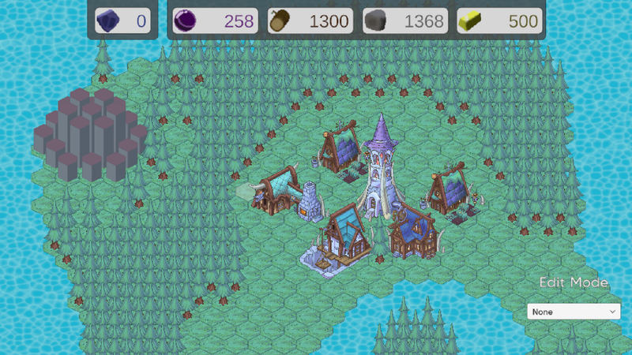
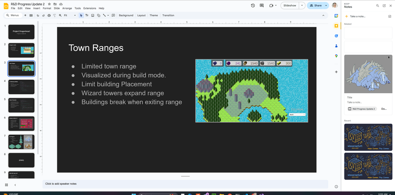
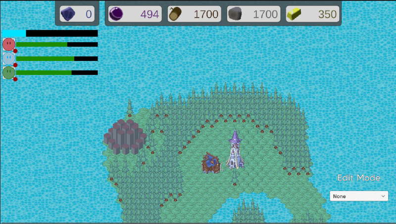

Post #4
We didn't have much that we necessarily needed to accomplish this meeting. There weren't any major things to discuss with the main group, so we mostly used it as work time. We showed each other what we had completed over the following week. I showed the completed functionality of the Wizard Towers interacting with the town's range.
Connor had finished creating a delete confirmation screen which would allow the user to confirm whether or not they wished to delete a building, showing them the resource refund they'd recieve as well as a warning that deleting a wizard tower might delete other buildings as well. This required the UI to act as a middle-man between the user interaction and the building system. Initially the system had some problems when trying to delete a tile, which the user couldn't delete, so I spent the first bit of my time resolving this issue.
We decided on what we wanted to accomplish for the following week. As of this point, the dungeon still only had a hard-coded reward and could grant as many fossils the player won battles. I wanted to create a system to customize the rewards and provide multiple levels for each dungeon. Connor would do more work in UI tweaks and additions. Nadav would continue working on the dungeon art and finishing the environment tiles.
WIP image of the dungeon.
As previously described, I wanted to make an actual system for describing and customing dungeon rewards. I created the Dungeon Levels UI. This UI, for now, can display up to 4 different levels for a given dungeon. When a player interacts with the dungeon it open this UI instead of opening the fighting UI for the dungeon. Each entry in the dungeon UI displays the range of gold it can reward, the number of fossils the player has/can get, and the difficulty rating of the level.
Image of the new Levels UI.
In making this UI it actually resolved certain concerns I had regarding the functionality of the old UI. For instance, if the player's party of adventurers was in one dungeon and the player attempted to open the UI of another dungeon, it just wouldn't display any details of the fight and display the "not ready" text. I thought this was pretty bad solution as it didn't communicate very well to the player what they were seeing. With the new system I can instead just prevent them from entering the fighting UI from the level UI when they're interracting with a different dungeon.
This meeting was much less formally aranged than the previous meetings. Connor asked me to join a call so that we could establish how we wanted the functionality of the farm to be imlemented and for my advice in how to get it to work with the town range system I had created. Once that was finished we decided that while we were meeting we might as well begin preparing the slide show we'd be presenting in the following team meeting. We offered Nadav to join but he was busy. We allocated slides that Nadav could complete later before meeting.
Prior to the team meeting I wanted to implement the art that Nadav had created over the past several weeks. I figured this would be a good way of demonstarting the progress of our project and highlighting Nadav's contributions. Implementing the art consisted of creating new tiles for each of the sprites. Getting each unique tile to fit well within the tile grid took some tinkering as many weren't created with the tile grid in mind. This tinkering mostly consisted of changing the pixels per unit of each sprite and manipulating the pivot of the sprite so that it would fall snugly within a tile boundary.
Each of the buildings covered multiple tiles of space, but only consisted of one sprite. Up until now every single tile had its own sprite to display. To get around this I created a "blank" tile with a transparent 1x1 sprite to fill the tiles that no longer needed a sprite. Figuring out exactly which tile coordiantes each blank tile needed to be also took some trial and error, as the I have still yet to memorize the directions of the cubic coordiante system of the hex grid.
All the current buildings and environment tiles in the Unity scene.
As I have mentioned multiple times for this meeting each group had a presentation for their project. The other R&D group began. Thier presnetation focused on their new art, animations, and attacks for both the player and the enemies. It also sounded like they had a better system for setting up and transitioning between levels. Out group presented after them. Of course, we just talked about what we had completed the next week, which included all of what I mentioned in the section for Weekly meeting #6. Connor Chen gave an update on Project Sandcastle which was nearing its deadline. They had much more features which seemed "complete" than before, such as the walls having a more finished look.
Example screenshot from out slideshow presentation.
Once the presentations were over we established our tasks for the following week. I wanted to implement more UI for the quest system to help communicate to the player what was happening during certain events. Connor would do more work in implementing the farms, and Nadav would finish up the dungeon art and maybe move onto character art.
As of now, unless you are actively staring down the dungeon UI there is no way of knowing how a dungeon battle is going. One of the UI features I wanted to implement was a miniature version of the dungeon UI which could be displayed in the corner whenever this screen wasn't open. Idealy it will help keep the player informed of the current battle whilst enabling them to perform other tasks of the game.
Most of the designing of the UI could be created by coppying elements from other UI. In particular, I copied the Tavern UI, as it already had the horozontal lines I was looking for. In adapting It I removed things such as the back panel, the extra features, text, and any other information that didn't seem vital for this screen.
Example image of the Mini Dungeon UI during battle.
Much like how the design could be adapted from the other UI, much of the Implementation could as well. The main script for the UI was copied from the regular Dungeon UI and adapted, while the script for each adventurer's display was copied from the same Tavern UI that its design was adapted from. Another feature of its Implementation was turning it off and on based on whether the Dungeon UI was open. For this I only had to add a reference to the Mini UI in the dungeon UI and use the SetActive function in the OnEnable and OnDisbale functions respectively.